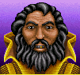

В игре существуют четыре типа героев:
Рыцари имеют Knight Bonus, увеличивающий мораль их отрядов на 1.
| Maximus | Sir Galant | Lord Kilburn |
| Tiro | Lord Haart | Ambrose |
| Ector | Arturius | Dimitry |
Варвары не несут затрат при перемещении по пересеченной местности.
| Antoine | Atlas | Crag Hack |
| Ergon | Jojosh | Kelzen |
| thundax | Tsabu | Yog |
Колдуньи имеют удвоенное количество пунктов перемещения по воде.
| Ariel | Astra | Carlawn |
| Gem | Luna | Natasha |
| Rebecca | Troyan | Vatawna |
Имеют на 2 единицы больший обзор
|  Agar | Arie | Barok |
| Crodo | Falagar | Kastor |
| Sandro | Vesper | Wrathmont |
| Knight | 1 | 2 | 1 | 1 |
| Barbarian | 2 | 1 | 1 | 1 |
| Sorceress | 0 | 0 | 2 | 3 |
| Warlock | 0 | 0 | 3 | 2 |
Получается:
| Уровень | 2 | 3 | 4 | 5 | 6 | 7 | 8 | 9 | 10 |
| Опыт | 1000 | 2000 | 3200 | 4500 | 6000 | 7700 | 9000 | 11000 | 13200 |
| Уровень | 11 | 12 | 13 | 14 | 15 | 16 | 17 | 18 | 19 |
| Опыт | 15500 | 18500 | 22100 | 26420 | 31604 | 37824 | 45288 | 54244 | 64991 |
| Тип героя | Уровень | Attack Skill | Defence Skill | Spell Power | Knowledge |
| Barbarian | 2-9 | 55% | 35% | 5% | 5% |
| Barbarian | 10+ | 30% | 30% | 20% | 20% |
| Knight | 2-9 | 35% | 45% | 10% | 10% |
| Knight | 10+ | 25% | 25% | 25% | 25% |
| Sorceress | 2-9 | 10% | 10% | 30% | 50% |
| Sorceress | 10+ | 20% | 20% | 30% | 30% |
| Warlock | 2-9 | 10% | 10% | 50% | 30% |
| Warlock | 10+ | 20% | 20% | 30% | 30% |